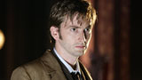

| HOME | Episódios | Galeria de Fotos | Downloads | Jogo | Personagens | Entrevista |
Personagens |
||
O Doutor (1ª Temporada)Christopher EcclestonO misterioso Doutor viaja no tempo e no espaço, com seus companheiros humanos, corrigindo os erros e experimentando a emoção da aventura. Ele é um Lorde do Tempo e o último membro sobrevivente de sua raça. |
||
|  | O Doutor (2ª a 4ª temporadas)David TennantDepois de se regenerar o no final da 1ª temporada, o Doutor assume uma nova forma. |
|
Rose TylerBillie PiperRose é a companheira de viagem do Doutor. Ousada, corajosa e com um irreprimível senso de humor, ela acompanha O Doutor em suas aventuras emocionantes e, ocasionalmente, dá uma passadinha em casa para ver sua mãe. |
||
Martha Jones (3ª Temporada)Freema AgyemanApós um encontro ao acaso com O Doutor na 3ª temporada, Martha Jones torna-se sua nova companheira. |
||
Donna Noble (4ª Temporada)Catherine TateDe noiva em fuga a viajante intergalática, Donna abriu mão da rotina e está pronta para explorar o Universo. Só não pense que ela e o Doutor são um casal! |
||
Mickey SmithNoel ClarkeMickey é o namorado de Rose. Ele é muito apegado à Terra e acha que o doutor e essa coisa de viagem viagem no tempo uma interrupção intrusiva e desagradável. |
||
Jackie TylerCamille CoduriA mãe de Rose é uma mulher das melhores. Ela se preocupa profundamente com sua filha e não confia muito neste cara misterioso que se aventura com ela pelo universo. |
||
Capitão Jack HarknessJohn BarrowmanCapitão Jack é um encantador e inventivo vigarista que se depara com O Doutor e Rose na Terra do século XX. Ele junta-se à tripulação da TARDIS e logo prova seu valor. |
||
Sarah Jane Smith & K9Elisabeth SladenOs velhos amigos do Doutor e companheiros do passado se reencontram no episódio 3 da 2ª temporada. |
||